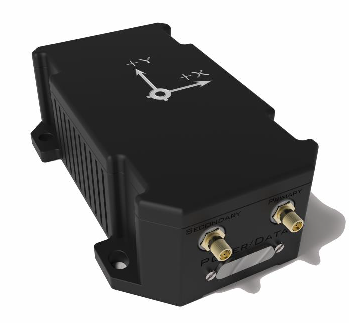
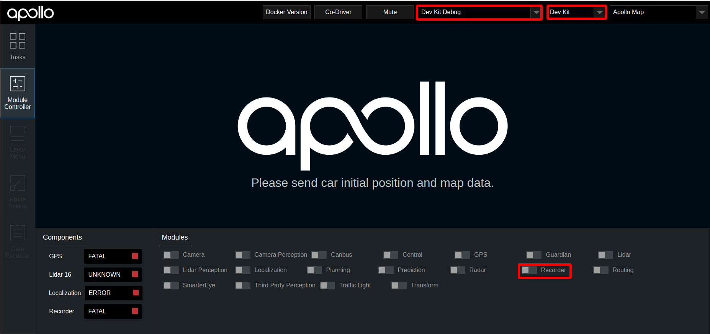
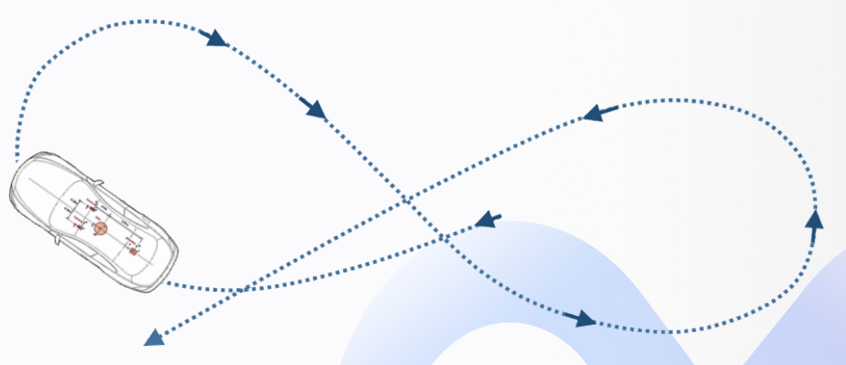
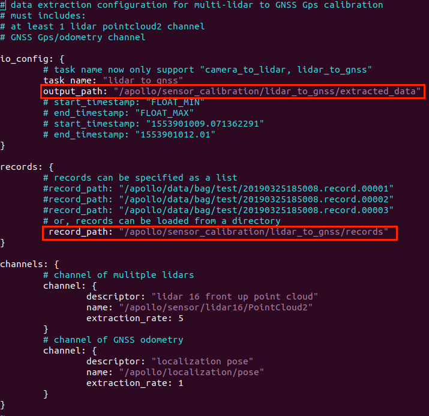
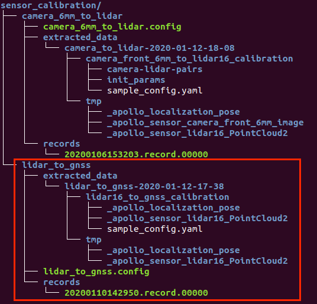
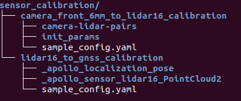
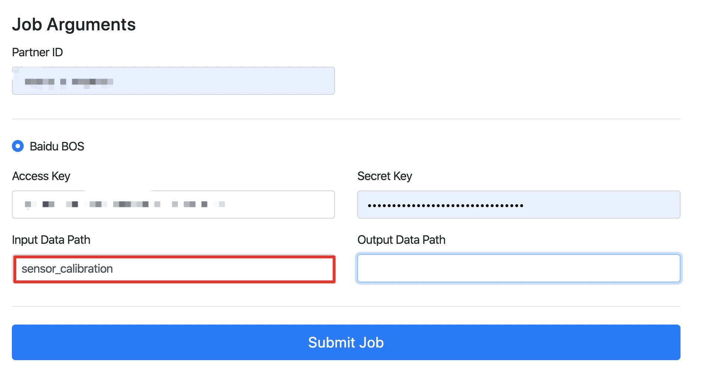
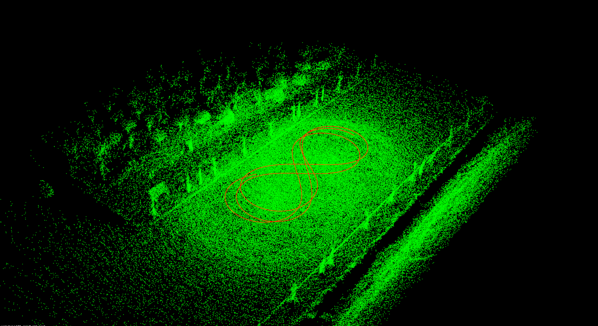
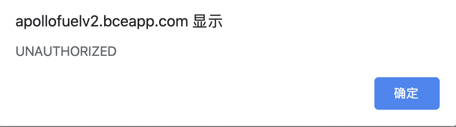

基于激光雷达的封闭园区自动驾驶搭建--感知设备标定
- 基于激光雷达的封闭园区自动驾驶搭建--感知设备标定
- 概览
- 前提条件
- 百度云对象存储BOS注册
- 开通云服务账号
- 修改配置文件
- Lidar-GNSS标定初始外参测量
- 标定场地选择
- Lidar-GNSS标定数据包录制
- Lidar-GNSS标定数据预处理
- 使用标定云服务生成外参文件
- NEXT
- 常见问题
概览
该用户手册旨在帮助用户完成激光雷达的标定(Lidar-IMU)
前提条件
百度云对象存储BOS注册
注册方法参考百度云对象存储BOS注册与基本使用向导
开通云服务账号
请与商务部门联系开通云服务账号，需要提供上一步骤中注册的Bucket名称、所属地域和用户邮箱信息
修改配置文件
| 修改文件名称 | 修改内容 |
|---|---|
modules/localization/conf/localization.conf |
enable_lidar_localization设置为false |

注意：所有传感器标定完成后，如果用户要使用msf定位，则需要再改为true。
Lidar-GNSS标定初始外参测量
各传感器坐标系的定义及初始化外参文件的配置
1. IMU、Lidar的坐标系定义

2. Lidar坐标系原点在传感器的位置
Lidar坐标系原点位于Lidar底部向上37.7mm的平面所在的中心点，如下图所示。

3. IMU坐标系原点在传感器的位置
IMU坐标系原点位于IMU的几何中心上(中心点在Z轴方向上的位置为IMU高度的一半，在XY轴上的位置已在IMU上标出，如下图所示)

4. 手动测量Lidar-GNSS的初始化外参
这里默认用户按照感知设备集成文档的要求正确安装了传感器，即传感器坐标系的定义与上文中的定义相同，且安装误差满足文档中的要求。
-
rotation:在传感器的安装满足上述安装要求的情况下，用户无需测量该值，可直接使用如下的默认值即可
rotation: w: 0.7071 x: 0.0 y: 0.0 z: 0.7071 -
translation:用户需要手动测量以IMU坐标系为基坐标系，以Velodyne16坐标系为目标坐标系的位移变换，一个IMU-Velodyne16位移变换的示例如下所示：
translation: x: 0.0 y: 0.38 z: 1.33标定场地选择
标定场地会直接影响到标定效果。对标定场地有如下要求 - 标定场地中心8米范围内需要有轮廓清晰的静态参照物，如电线杆、建筑物、车辆，避免过多动态障碍物。如果静态障碍物距离较远，会严重影响标定效果 - 确保路面平坦 - 能确保GNSS信号良好，不要有过多的干扰
Lidar-GNSS标定数据包录制
1. 标定所需channel
进行Lidar-GNSS的标定，需要录制包含传感器信息的数据包作为数据输入，所需的channel及channel频率如下表所示：
| 模块 | channel名称 | channel频率（Hz） |
|---|---|---|
| VLP-16 | /apollo/sensor/lidar16/PointCloud2 | 10 |
| Localization | /apollo/localization/pose | 100 |
为获取上述channel，需要正确启动Apollo环境及dreamview，在dreamview中选择模式为Dev Kit Debug， 选择车型为Dev Kit，并在dreamview中启动启动GPS、Localization、lidar三个模块，可参考基于激光雷达的封闭园区自动驾驶搭建--感知设备集成
注意：在正式开始录制前，务必确保以上channel能正常输出数据。
2. 使用Apollo录制数据包的方法
- 在dreamview中，启动
recorder模块即开始录制数据包，关闭recorder模块即停止录制数据包

- 如果工控机没有插入移动硬盘，则数据包会存储到工控机的
apollo/data/bag/路径下(注意，apollo为代码目录);如果工控机插入了移动硬盘，则系统会将数据包存储到可用容量较大的硬盘中，如果移动硬盘可用容量较大，则存储路径为移动硬盘的data/bag/目录。
3. 开始录制数据包
待channel数据正常输出后，可以开始录制数据包。录制期间，需要控制车辆以8字形轨迹缓慢行驶，并使转弯半径尽量小 ，至少包含5圈完整的8字轨迹数据。

Lidar-GNSS标定数据预处理
该步骤将通过提取工具将record数据包中的点云和定位数据进行预处理，以方便通过云服务进行在线标定。
1. 按照目录结构放置好Lidar-GNSS标定数据包
复制sensor_calibration目录(路径为 docs/specs/Apollo_Fuel/examples/sensor_calibration/)并放置于apollo根目录下，其目录结构如下：
.
└── sensor_calibration
├── camera_12mm_to_lidar
│ ├── camera_12mm_to_lidar.config
│ ├── extracted_data
│ └── records
├── camera_6mm_to_lidar
│ ├── camera_6mm_to_lidar.config
│ ├── extracted_data
│ └── records
└── lidar_to_gnss
├── extracted_data
├── lidar_to_gnss.config
└── records
本小节重点关lidar_to_gnss目录，把前面录制的Lidar-GNSS标定数据包放置于sensor_calibration/lidar_to_gnss/records/目录中。
2. 修改抽取工具配置文件 lidar_to_gnss.config
根据实际情况，修改配置文件lidar_to_gnss.config中预处理数据产出目录（output_path）和待处理数据包目录（record_path），参考下图：

注意：以上目录需要指定绝对路径。
3. 运行数据抽取工具
进入docker环境，执行如下命令：
budaoshi@in_dev_docker:/apollo$ cd /apollo/modules/tools/sensor_calibration
budaoshi@in_dev_docker:/apollo/modules/tools/sensor_calibration$ python extract_data.py --config /apollo/sensor_calibration/lidar_to_gnss/lidar_to_gnss.config
注意：--config参数指定了配置文件路径，必须为绝对路径，用户根据情况自行修改。
等待终端中显示Data extraction is completed successfully!的提示代表数据提取成功，提取出的数据被存储到配置文件中指定的output_path路径下。运行数据抽取工具后的目录如下图红框所示：

4. 修改云标定配置文件 sample_config.yaml
修改数据抽取工具生成的sample_config.yaml文件。把前面步骤手动测量的Lidar-GNSS标定初始外参信息填入，仅需要填写translation字段。修改完之后把lidar16_to_gnss_calibration目录准备后续待用。
使用标定云服务生成外参文件
1. 上传预处理后的数据至BOS
注意： 必须使用开通过权限的 bucket，确认Bucket名称、所属地域和提交商务注册时的Bucket名称和所属区域保持一致。
在BOS bucket中新建目录sensor_calibration，作为后续云标定服务读取数据的Input Data Path，把前面预处理生成的数据拷贝至该目录。目录结构如下：

2. 提交云标定任务
打开Apollo云服务页面，如下图：

在New Job下拉框中选择Sensor Calibration选项，根据实际情况填写Partner ID（请与商务联系）、Access Key（按BOS账号实际情况填写）、Secret Key（按BOS账号实际情况填写）、Input Data Path（在本例中为"sensor_calibration"）、Output Data Path（用户需要在BOS中指定一个目录，用于存储验证标定效果的pcd文件）最后点击Submit Job按钮提交。
3. 获取标定结果验证及标定外参文件
云标定任务完成后，将在注册的邮箱中收到一封标定结果邮件。如果标定任务成功，将包含标定外参文件。
Lidar-GNSS标定结果验证：
- BOS中用户指定的Output Data Path路径下包含了后缀名为.pcd的点云文件，使用点云查看工具检查pcd文件，如果点云文件中周围障碍物清晰、锐利，边缘整齐表示标定结果准确，否则请重新标定。

- 在ubuntu系统下，可以使用
pcl-tools工具查看点云文件
sudo apt-get update
sudo apt-get install pcl-tools
pcl_viewer xxx.pcd
Lidar-GNSS标定外参文件：
确认邮件得到的外参文件合理后，将邮件发送的外参文件的rotation、translation的值替换掉modules/calibration/data/dev_kit/velodyne_params/velodyne16_novatel_extrinsics.yaml中对应的rotation、translation值。注意不要修改frame_id、不要直接替换文件。
NEXT
现在，您已经完成激光雷达感知设备标定，接下来可以开始封闭园区自动驾驶搭建--虚拟车道线制作
常见问题
1. 提交后，显示UNAUTHORIZED,如下图所示

出现该问题，一般是Partner ID输入有误
2. 进行Sensor Calibration任务后，邮件显示任务失败
建议检查一下输入路径是否正确
3. 标定结果效果较差
- 标定时，确保GNSS信号状态良好，周围有轮廓清晰的静态障碍物
- 保证传感器的安装精度，安装误差超过要求精度时，标定结果不容易收敛
- 标定时，不要距离有效静态障碍物太远